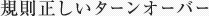

お肌は常に新しく生まれ変わってゆく。そのサイクルを「ターンオーバー」と言います。
早すぎず、遅すぎず、規則正しいターンオーバーの繰り返しこそが、肌本来の美しさへの近道です。

ターンオーバーは表皮でも真皮でも行われていますが、特にさかんに行われているのが表皮です。
表皮は厚さたった0.2mmのなかで、基底細胞→有棘細胞→顆粒細胞→角質細胞とドラマティックに変化しています。
美しく健康な肌を保つためには毎日規則正しく行われる事が非常に大切なのです。 基底層で細胞が生まれ、古い角質がはがれ落ちるまでのサイクルは、約4～6週間が正常と言われています。
しかし、乾燥などの外部刺激や老化などにより、このサイクルが遅れがちになっていくと、様々な肌トラブル（乾燥、シミ、くすみ、毛穴、ニキビ等）を引き起こすと言われています。
つまり、ターンオーバーを正常にすれば、これらの肌悩みを改善することができるのです。